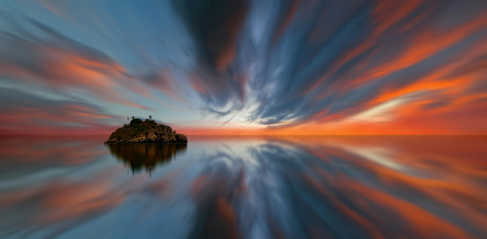

Zaman Atlamalı (Time-Lapse) Çekim İçin Başlangıç Rehberi
Zaman atlamalı (time-lapse) video tekniği, yavaş gerçekleşen süreçleri hızlandırarak etkileyici görsel hikâyelere dönüştürür. Gün doğumundan bulut hareketlerine, şehir trafiğinden çiçek açmasına kadar birçok sahne bu teknikle dramatik şekilde yakalanabilir. Bu rehberde, ekipman seçiminden çekim planlamasına ve post prodüksiyona kadar sağlam bir başlangıç için bilmen gereken tüm adımları bulabilirsin.
Time-Lapse Nedir?
Time-lapse, belirli aralıklarla çekilmiş fotoğrafların birleştirilerek hızlandırılmış bir video oluşturma tekniğidir. İnsan gözünün fark edemeyeceği yavaş süreçler bu sayede saniyeler içinde izlenebilir hale gelir.
Hangi Ekipmanlara İhtiyacın Var?
- Kamera: DSLR ya da aynasız bir fotoğraf makinesi idealdir. Manuel ayar kontrolü ne kadar genişse sonuçlar o kadar tutarlı olur.
- Tripod: Sarsıntısız çekim için sağlam bir tripod zorunludur. Hafif modeller outdoor çekimlerde avantaj sağlar.
- Intervalometre: Çekim aralığını kontrol eden cihazdır. Birçok modern kamera gövdesinde dahili time-lapse modu bulunur. Eğer yoksa harici bir intervalometre kullanılabilir.
- Yedek Batarya ve Geniş Hafıza Kartı: Uzun çekimler yüksek enerji ve depolama gerektirir.
- ND Filtre (İsteğe Bağlı): Özellikle gün ışığında daha uzun pozlama süreleri kullanmak isteyenler için yararlıdır.
Doğru Sahneyi Seçmek
Sahne seçimi time-lapse’in etkisini belirleyen en kritik faktördür.
- Hızlı atmosfer değişimlerinin olduğu açık alanlar
- Trafik akışının yoğun olduğu şehir görüntüleri
- Hareketli gökyüzü, bulut geçişleri
- İnsan trafiğinin yoğun olduğu meydanlar
- Gün batımı, gün doğumu gibi dinamik ışık geçişleri
Sürecin zaman içinde görünür bir değişim üretmesi gerekir; aksi takdirde video durağan hissedilir.
Çekim Öncesi Planlama
- Işık Durumunu Analiz Et: Çekim yapacağın saat ışığın değişim hızını belirler. Örneğin gün batımı hızlı değiştiği için aralıkları daha sık tutmak gerekir.
- Kadrajı Sabitle: Kompozisyonu çekim başlamadan sağlamlaştır. Ufuk çizgisinin eğik olmaması, sahnenin merkezde veya üçte birler kuralına uygun yerleşmesi önemlidir.
- Hesaplama Yap: Standart bir time-lapse videosu 24 veya 30 fps ile oluşturulur.
- Örnek hesap:
- 10 saniyelik bir video istiyorsun
- 30 fps kullanacaksın
- Toplam kare = 10 × 30 = 300 fotoğraf
- Çekim aralığını 5 saniye seçersen toplam çekim süresi = 300 × 5 = 1500 saniye (25 dakika)
Kamera Ayarlarını Doğru Yapma Rehberi
- Manuel Mod: Time-lapse çekimlerinde tüm ayarların sabit olması gerekir. Aksi halde kareler arasında parlaklık farkları oluşur.
- Diyafram: Sahneye göre f/5.6 – f/11 arası
- Enstantane: Hareket akıcılığını belirler
- ISO: Mümkün olduğunca düşük
- Beyaz Dengesi: Otomatik bırakılırsa sahne değiştikçe renkler kayabilir. Ortama uygun sabit bir WB seçmelisin.
- Netleme: Otomatik netleme dalgalanmalar yaratır. Manuel netleme kullanarak konuya kilitlen.
- Raw Çekim Önerisi: Raw formatı post-prodüksiyonda çok daha geniş bir düzenleme imkânı sunar.
Pozlama Süresi ve Aralık Ayarı
Time-lapse çekiminin karakterini belirleyen iki temel değer:
- Çekim Aralığı (Interval): Hareket ne kadar hızlıysa aralık o kadar kısa olmalı.
- Bulut hareketi: 2–5 saniye
- İnsan trafiği: 1–2 saniye
- Gün batımı: 3–6 saniye
- Bitki büyümesi: Saatlik veya günlük
- Pozlama Süresi: Hareketin akıcı görünmesini sağlar. Çok kısa süreler kareleri “titrek” gösterebilir. Gün ışığında ND filtre kullanarak daha uzun pozlama süreleri elde edebilirsin.
Çekim Sırasında Dikkat Edilecek Noktalar
- Tripodu sabitle, rüzgarda ağırlık ekle.
- Kadraja girebilecek beklenmedik hareketleri öngör.
- Batarya ve hafıza kartını çekimden önce kontrol et.
- Uzun çekimlerde LCD ekranı kapatarak enerji tasarrufu yap.
- Kameranın ısınmaması için gölgede konumlandırmayı düşün.
Fotoğrafları Videoya Dönüştürme (Post Prodüksiyon)
Kareleri düzenlemek ve video haline getirmek için birkaç popüler yöntem:
- Adobe Lightroom: Tüm karelerde toplu düzenleme yapmak için idealdir. Pozlama, kontrast, renk ve keskinlik tek seferde uygulanabilir.
- Adobe Premiere Pro: Fotoğraf dizilerini video sekansı olarak içe aktarıp final videoyu istediğin fps değerine göre çıkartabilirsin.
- After Effects: Gelişmiş kare sabitleme, renk geçişi ve hareket yumuşatma seçenekleri sunar.
- Alternatif Yazılımlar: LRTimelapse, DaVinci Resolve, Final Cut Pro gibi güçlü çözümler de mevcuttur.
Başlangıç Seviyesi İçin Time-Lapse Çekim Önerileri
- Gün batımı: Işığın hızlı değişmesi etkileyici sonuç verir.
- Şehir manzarası: Trafik akışı ve araç ışıkları güzel bir akıcılık sağlar.
- Hareketli bulutlar: Açık havalarda en pratik çekim türüdür.
- İnşaat alanı: Zaman içinde belirgin değişim sunar.
- Yıldız pozlama (Star-Lapse): Tripod ve uzun pozlama bir araya gelince estetik görüntüler oluşur.
Sonuç
Time-lapse çekim, sabır gerektiren fakat bir o kadar da ödüllendirici bir fotoğraf ve video tekniğidir. Doğru ekipman, stabil ayarlar ve iyi planlamayla herkes etkileyici zaman atlamalı videolar üretebilir. Başlangıç seviyesinde küçük sahnelerle başlayıp deneyim kazandıkça daha uzun ve karmaşık projelere geçebilirsin.